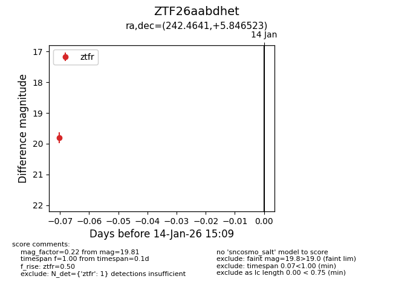
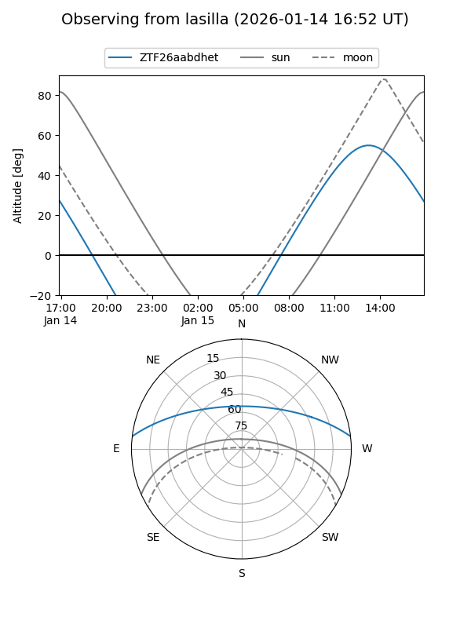
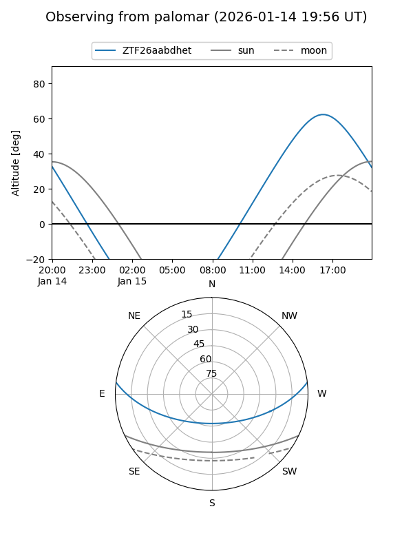

ZTF26aabdhet
Target ZTF26aabdhet at 2026-01-14 15:10
Aliases and brokers:
FINK: link
Lasair: link
ALeRCE: link
alt names
ZTF26aabdhet (ztf,fink_ztf)
Coordinates:
equatorial (ra, dec) = 242.4641,+5.84652
equatorial (HMS+DMS) = 16:09:51.39,+05:50:47.48
galactic (l, b) = (17.9106,+38.33164)
Flags:
Photometry:
last ztfr=19.81
1 ztfr detections
Lightcurve

Visibility


Additional plots